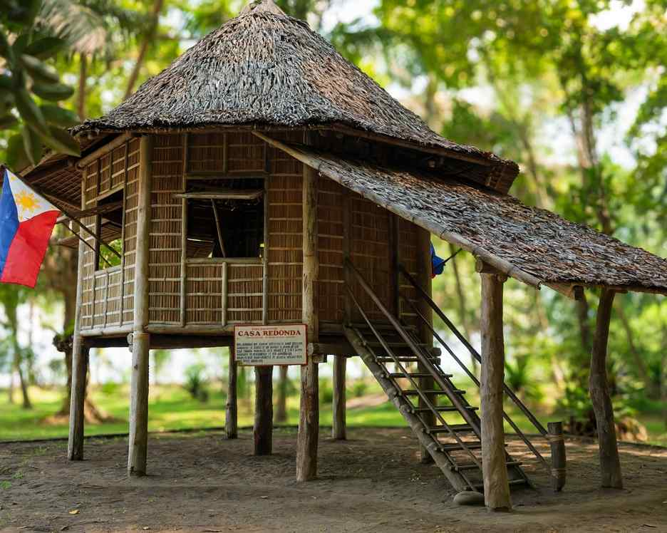

Dapitan is the town where José Rizal spent his exile, and the Rizal Shrine in Barangay Talisay is the reason most people make the trip. Entry to the shrine is free, the grounds open from about 8 AM to 5 PM, and the museum inside usually closes on Mondays, so a Tuesday-to-Sunday visit is the safe plan.
Rizal arrived in 1892 as a deported man and left in 1896, and he did not sit still in between. He treated patients, taught a small group of local boys, farmed, built a water system and drew a relief map of Mindanao in the town plaza. The shrine makes far more sense once you know that, because each structure on the grounds belongs to one of those jobs.
Below is a way to read the estate by those roles, then the practical part: how to reach Dapitan, what to pair with the shrine, where to sleep and which months give you the easiest weather.

Reading the Rizal Shrine by What He Did There
The estate covers about 16 hectares of shaded ground, roughly two and a half kilometers from the city plaza. It is managed by the National Historical Commission of the Philippines, and the bamboo and nipa houses you see are rebuilt versions placed where Rizal's originals stood. Treat them as careful reconstructions rather than the houses he touched.
The doctor and the teacher
Casa Residencia, the main house on stilts, was his home. Casa Redonda, the round house in the photo above, is tied to his work with patients and the boys he taught, who lived and studied on the property. Standing between the two, you get a clear sense of how small and self-contained this world was: a clinic, a school and a household within a short walk of one another.
The engineer and the farmer
Look for the remains of the water system he designed to bring water to the property. It is a modest structure, and that is the point: a trained physician solving a plain village problem with what was at hand. The surrounding land was farmed under his direction, and the trees and open ground still give the place the feel of a working estate rather than a monument.
The museum
The museum holds personal items, documents and objects from the exile years. Give it at least half an hour. Volunteer guides often wait near the entrance; a tour costs nothing, but a tip of PHP 50 to PHP 100 is a fair thank-you. Reading every marker on the grounds takes around one and a half to two hours.
Go at opening time. By late morning the open stretches between houses get hot, and shade is patchy. A hat, water and an umbrella help, and since this is a national historical site, leave the beachwear for later in the day.
The Map in the Plaza and the Rest of Dapitan
Finish the Rizal story in the town center. His relief map of Mindanao, shaped in earth and stone, sits in the plaza beside St. James the Greater Parish Church. It is easy to walk past, so ask a local to point it out. Pair that with ancestral houses along the downtown streets, then climb Ilihan Hill for a view across Dapitan Bay.
Tricycles are the way around town. Short rides downtown have run about PHP 10 to PHP 20 per person, and a ride out to the shrine about PHP 20 to PHP 30. For a half-day loop covering the shrine, plaza and hill, agree on a chartered price before you climb in; PHP 150 to PHP 200 has been typical.
Adding a Beach Day at Dakak
Dakak Park and Beach Resort in Barangay Taguilon, about 12 kilometers from the city, has a private stretch of white sand facing the Sulu Sea. Day visitors have paid around PHP 1,000 each, with part of that credited toward food or non-motorized gear. Outside food and drinks are not allowed, and the credit rarely covers a full meal, so budget a few hundred pesos more. Promotions come and go, so confirm the rate with the resort before you head out.
Overnight rooms start at roughly PHP 4,500 and climb in peak months. A habal-habal from Dapitan to Dakak has cost about PHP 100 to PHP 150 one way.
Those who want a quieter sea day can ask about boats to Aliguay Island, a small white-sand island offshore. Boat rental has been quoted at PHP 2,500 to PHP 3,500 for a group, plus an environmental fee. Trips are often cancelled when the sea turns rough in the wet months.
How to Get to Dapitan
Dapitan has no airport. Flights land in Dipolog, its neighbor about 12 kilometers away. Cebu Pacific's CebGo runs a direct Cebu to Dipolog service of about an hour, with one-way fares commonly between PHP 2,000 and PHP 3,500 when booked a few weeks ahead and much more at the last minute. From Dipolog, vans to Dapitan leave often and have charged around PHP 25 to PHP 50, or a chartered tricycle runs PHP 200 to PHP 300 for the 20 to 30 minute ride.
The slower option is the overnight boat. Starlite Ferries has sailed Cebu to Dapitan at night several times a week, arriving at Dapitan port in the morning after eight to ten hours. Economy seats have cost roughly PHP 900 to PHP 1,150, with cabins higher. You save a night of lodging and land right in town, but the air-conditioned economy deck gets cold, so pack a jacket. Sailing days shift in lean months, so check the operator's page for the current schedule before planning around it.
Where to Stay and When to Go
Pick your base by what you came for. Dapitan proper has small inns and guesthouses, roughly PHP 800 to PHP 2,000 a night, and puts you closest to the shrine. Dakak is the beach option. Dipolog suits anyone with an early flight and has more hotels and malls. With three days, a night in town and a night at the beach works well.
December to May is the drier stretch, with calmer seas for Dakak and Aliguay. January and February tend to be the most comfortable months for walking the shrine, while May is the hottest. June to October brings frequent afternoon rain, and boats are more likely to be called off. In July, the town marks the feast of its patron, St. James, with the Kinabayo Festival around July 25, so expect a busier, livelier Dapitan and book rooms early.
Before You Go
Carry cash. ATMs exist in Dapitan and Dipolog, but tricycles, small eateries and ferry counters mostly want pesos in hand. Mobile signal is decent in town and weaker around the Dakak cove. No permit or ID is needed for the shrine.
Rizal's story closes in Manila, where he was held at Fort Santiago before his execution in December 1896. Our Intramuros walk with Fort Santiago covers that chapter. For a longer Mindanao trip, the Philippine Eagle Center in Davao or the T'boli weavers and waterfalls of Lake Sebu add a very different leg.
Plan the shrine for a weekday morning, leave an afternoon for the plaza map, and Dapitan stops being a name from a history book. It becomes the place where a man in exile kept working.


1 Comment
AAllan
I wish to visit there someday.Im inspire by our hero’s works, principles and values
This is such an amazing place to vist. The inspiration that Jose Rizal left for us will live on for generations
Leave a Reply